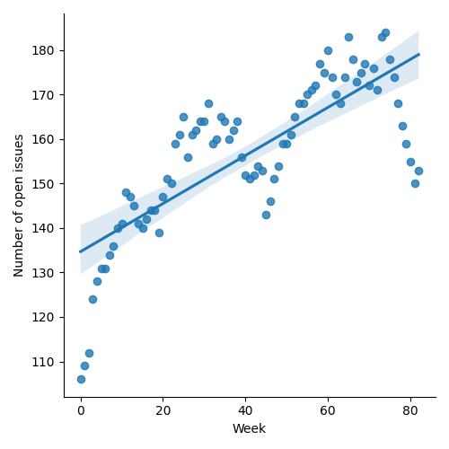
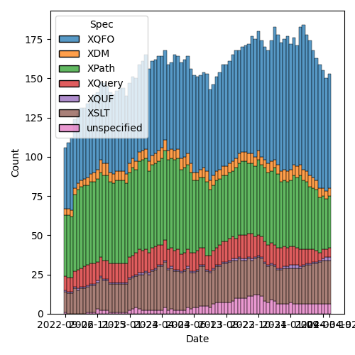
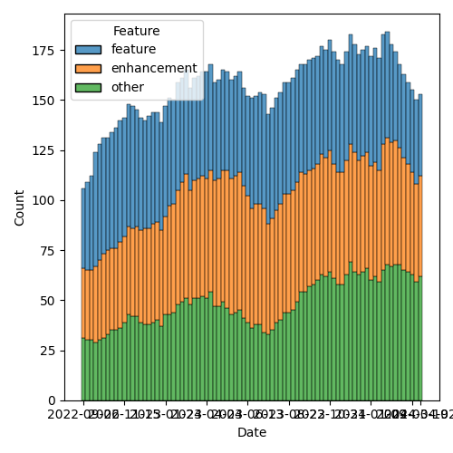

QT4 CG Meeting 072 Minutes 2024-04-09
Table of Contents
- Minutes
- Summary of new and continuing actions
[0/10] - 1. Administrivia
- 2. Technical Agenda
- 2.1. PR #1132: 122 Choice item types (generalizing local union types)
- 2.2. PR #1131: 796,231 - Extend XPath for and let expressions
- 2.3. PR #1120: 99v2 deep equal with callback
- 2.4. PR #1108: 566-partial Describe a less aggressive %-encoding for fn:build-uri
- 2.5. PR #1098: 566-partial Editorial improvements for parse-uri
- 2.6. PR #1093: 1091 Add fn:collation function
- 3. Any other business
- 4. Adjourned
Meeting index / QT4CG.org / Dashboard / GH Issues / GH Pull Requests
Minutes
Approved at meeting 073 on 16 April 2024.
Summary of new and continuing actions [0/10]
[ ]QT4CG-063-06: MK to consider refactoring the declare item type syntax to something like declare record[ ]QT4CG-064-08: NW to open an issue to try to resolve $search to $target consistently.[-]QT4CG-069-02: NW to coordinate with MK to use the introspection features on the test suite.- In progress…
[ ]QT4CG-070-01: NW to review how records are formatted.[ ]QT4CG-071-06: NW to clarify the cases that are distinguished by the leading empty string in path segments[ ]QT4CG-072-01: MK to consider whether and when a choice type should be classified as a schema type[ ]QT4CG-072-02: MK to clarify that the position variable is a single, positive integer.[ ]QT4CG-072-03: NW to clarify the round-tripping of URIs[ ]QT4CG-072-04: DN to raise an issue about having a function to test if a collation URI is supported
1. Administrivia
1.1. Roll call [9/15]
Regrets: WP, JK.
[X]Reece Dunn (RD)[X]Sasha Firsov (SF)[ ]Mukul Gandhi (MG)[X]Christian Grün (CG)[ ]Joel Kalvesmaki (JK)[X]Michael Kay (MK)[X]Juri Leino (JLO)[X]John Lumley (JLY)[X]Dimitre Novatchev (DN)[ ]Wendell Piez (WP)[ ]Ed Porter (EP)[ ]Liam Quin (LQ)[ ]Adam Retter (AR)[X]C. M. Sperberg-McQueen (MSM)[X]Norm Tovey-Walsh (NW). Scribe. Chair.
1.2. Accept the agenda
Proposal: Accept the agenda.
Accepted.
1.2.1. Status so far…

Figure 1: “Burn down” chart on open issues

Figure 2: Open issues by specification

Figure 3: Open issues by type
1.3. Approve minutes of the previous meeting
Proposal: Accept the minutes of the previous meeting.
- JLO: The minutes mixed up JLO and JLY in one place.
- NW: Okay, send it in chat and I’ll fix it.
Accepted with that revision.
1.4. Next meeting
The next meeting is scheduled for Tuesday, 16 April 2024.
JLY gives regrets for 16 and 23 April.
1.5. Review of open action items [5/10]
[ ]QT4CG-063-06: MK to consider refactoring the declare item type syntax to something like declare record[ ]QT4CG-064-08: NW to open an issue to try to resolve $search to $target consistently.[-]QT4CG-069-02: NW to coordinate with MK to use the introspection features on the test suite.- In progress…
[ ]QT4CG-070-01: NW to review how records are formatted.[X]QT4CG-071-01: MK to put namespace bindings for XQuery back on the issue list- Issue #1119
[X]QT4CG-071-02: MK to raise a PR that changes map construction examples as appropriate[X]QT4CG-071-03: MK to review the definition of map equality infn:equal- See PR #1120
[X]QT4CG-071-04: MK to update the prose to highlight differences betweenfn:equalandfn:deep-equal- No longer relevant
[X]QT4CG-071-05: MK to consider the name of the function argument.- No longer relevant
[ ]QT4CG-071-06: NW to clarify the cases that are distinguished by the leading empty string in path segments
1.6. Review of open pull requests and issues
1.6.1. Merge without discussion
The following PRs are editorial, small, or otherwise appeared to be uncontroversial when the agenda was prepared. The chairs propose that these can be merged without discussion. If you think discussion is necessary, please say so.
- PR #1134: 1133 Correct map:filter callback signature
- PR #1128: 1020 Further notes on the consequences of function coercion
- PR #1123: 1118 Drop the "map" keyword in adaptive serialization output
- PR #1112: 1110-partial New error codes
Proposal: merge without discussion.
Accepted.
1.6.2. Close without action
It has been proposed that the following issues be closed without action. If you think discussion is necessary, please say so.
- Issue #1105: Casting to numerical type from strings with underscores
- Issue #983: fn:reduce (or fn:fold without initial value)
- Issue #834: Add creation function for `csv-row-record` type
- Issue #713: Annotations: Editorial notes
- Issue #666: Polyfill function implementations
- Issue #613: Allow "union" as synonym for "|" everywhere
- Issue #132: Clarify if redirects should be followed
- Issue #67: Allow optional parameters and keyword arguments on map and sequence variadic functions.
Proposal: close without further action.
Accepted.
2. Technical Agenda
2.1. PR #1132: 122 Choice item types (generalizing local union types)
See PR #1132
MK describes the PR.
- MK: This PR replaces local union types and generalizes them.
- … Union of sequence types didn’t satisfy the requirements and got complicated
- … Stuck with a union of item types.
- … Kept the terminology “local union type” to reduce churn in the spec
- … No substantial changes to enumeration types.
- … Subtyping turned out to be relatively easy.
- JLY: Two things: what is the semantics of casting when the union type could be ambiguous?
- MK: You take the first one that works. It is ordered, as with union types.
- JLY: So A union B isn’t necessarily the same as B union A (wrt casting)
- MK: That’s right.
- JLY: Can you use union everywhere you can use |?
- MK: No, there are places where | and
unionare different - MSM: At the very end of the first section, there was a paragraph that said “this is a schema type even though it’s not defined in any schema?” Is it always true that it isn’t in a schema, or is it meant to say “even if it’s created in some other way, it still counts as a schema type?”
- MK: That’s a good question. It relates to what we day about schema types. It
was primarily an attempt to avoid rewriting that section.
- … The current definition of “schema type” is a little bit fuzzy.
- CG: Why were union types renamed to choice item types?
- MK: To avoid confusion with union types in XSD.
- JLO: I’m wondering about the decision not to use sequence types. Can I still use them in a return type or parameter type?
- MK: Yes, but you’re only allowed one occurrenc indicator. You can’t say it’s a map or a sequence of strings. You have to say it’s a sequence of things that are maps or strings.
- DN: I like having this. I recently had to specify unions between maps and
arrays and this is an improvement over local union types. We have too many
union types now: pure union types, union types, choice items types. It becomes
confusing.
- … Can we say union types and not choice item types
- MK: Well, as I explained, I wanted to give it a different name so it was distinct from XSD.
- DN: Perhaps “XSD union types” and “XPath union types”
- MK: I’d be worried about making sure all the existing uses of “union types” got clarified.
- DN: Okay, then I just want to be on record as saying I think we have too many union types.
- RD: I like the proposal. It would be nice to see if we could get sequence type unions working. The example of “a list of strings or a map” is used in some MarkLogic APIs. There might be some other places too.
- MK: The area where I found it most difficult to deal with sequence types was in coercion rules. General unions start by getting a handle on the required item type, and that assumes you can base the rules on what the target item type is.
Some discussion. Would require more thought. This is the “easy 80% of the problem”.
- JLO: Following up, what happens if I have a union type of xs:integer and xs:string and I want to have a sequence of those. This allows a mixed sequence of integers and strings.
- MK: Yes.
- RD: Yes, but you can’t say “a list of strings or a list of only strings”
- MK: Right. You can only have a list of things each of which is either a string or an integer.
- DN: I was wondering how this would effect our rules for overloading of functions. If one specifies a argument type as the union of several types, that will make it more difficult to make the overload more specific.
- RD: Overloading only functions on the arity of the function.
- MK: What you can do now is have one function with alternative item types. You can’t have two different functions in that case, but you can have one function that accepts either.
- DN: That makes the logic in the function a little bit complex.
Some discussion of how you can currently use typeswitch in a function.
- MK: The current
fn:serializefunction accepts either an item or a map, and now you can get a more precises signature for that. - DN: We should comment that this facility can lead to cases where things become more complex.
- JLY: Is there a proposal to put typeswitch into XPath?
- MK: Not at the moment.
- JLY: Why not?
- MK: The whole question of what should be in XPath ends up being a matter of opinion: keep it as small as possible, or make it as powerful as possible. Pick one.
- DN: I want to put as many things as possible in XPath. But I’m against putting typeswitch in XPath because it would encourage messy programming.
- RD: I just wanted to say that as opposed to what DN said, this lets you be more restrictive about types.
ACTION QT4CG-072-01: MK to consider whether and when a choice type should be classified as a schema type
Proposal: Accept this PR.
Accepted.
2.2. PR #1131: 796,231 - Extend XPath for and let expressions
See PR #1131
- MK: This absorbs several separate issues. It allows XPath to have a larger
subset of FLOWR expressions.
- … The semantics are the same as XQuery, it just extends the XPath subset a bit.
MK reviews the grammar changes.
- MK: The names have to be unique across XPath and XQuery, so we get
XPForClause- … The grammar is defined in a slightly different way than XQuery, but its still a subset.
- … There’s not much change to the way its described.
- … Let expressions reuse the same constructs
- DN: The
atargument allows variables; can it be a single integer or a sequence… - MK: It’s a single integer.
- DN: Can we just say that the position variable should contain a single, positive integer.
- RD: I found the recursive definition of the for and let expressions to be a little confusing.
- … I initially wondered if this would allow a duplicated for clause.
- … I wonder if the grammar could be similar to the XQuery grammar where a ForLet expression is at the top.
- MK: Yes. This ties in closely to the way the semantics are described in XPath.
Doing the grammar differently would make it harder to express the semantics in
those terms.
- … In effect, this is just saying that you can leave out the return keyword in some cases.
- … The recursive description would up being simplest.
ACTION QT4CG-072-02: MK to clarify that the position variable is a single, positive integer.
Proposal: accept this PR.
Accepted.
2.3. PR #1120: 99v2 deep equal with callback
See PR #1120
- MK: At the last meeting, we looked at a proposal I made for a function named
fn:equal. There was pushback on that proposal about the limitations and there were questions about how it’s different fromfn:deep-equal.- … I decided that we could satisfy the requirement by adding a callback to
fn:deep-equal. - … The
fn:deep-equalfunction is extended with aitems-equalfunction. - … The function can say two items are equal, or not equal, or “ignore this call back and figure out per usual”.
- … This means you can overload the logic only for nodes or only for timestamps, etc.
- … I decided that we could satisfy the requirement by adding a callback to
- MK: It’s not a big change, but it does satisfy all of the use cases.
- JLY: This use of a triple-valued return, are there other places where this might be helpful?
- … Strikes me as a technique we could use a little more generally.
- MK: Potentially, though I can’t think of any.
- DN: This could be generalized to provide a “deep compare” function.
- … We are in need of comparison function for two arrays.
- … Maybe we need to think how to unify these concepts.
- MK: I did go down that avenue, but fell back to “doing one thing at a time.” There’s a gap in that area waiting to be filled.
Proposal: accept this PR.
Accepted.
2.4. PR #1108: 566-partial Describe a less aggressive %-encoding for fn:build-uri
See PR #1108
NW outlines the proposal and observes that this will require changes to the test suite, but proposes to do them separately.
- CG: What about query parmaters, should they also use these new rules?
- NW: … uh …
- … Dang it. I’m not going to try to decide that on the fly. Apologies for having over looked them.
Some discussion about how round-tripping comes into play and what effect it has. MSM proposes that it might be clearer if the spec described how fully unescaped, fully escaped, and partially escaped URIs are effected.
ACTION QT4CG-072-03: NW to clarify the round-tripping of URIs
2.5. PR #1098: 566-partial Editorial improvements for parse-uri
See PR #1098
Not ready for review.
2.6. PR #1093: 1091 Add fn:collation function
See PR #1093
MK reviews the proposal.
- MK: This is a convenience function that means you don’t have to remember the
URIs for UCA collations.
- … it takes a map and does two things: constructs a string consisting and then either returns it or reports an error if the resulting collation isn’t supported by the implementation.
- … There’s a little subtlty in the option parameter conventions; there’s a slight difference with respect to properties not defined in the spec. Implementation defined options are aligned with UCA collations.
- DN: I think I like this. Everything seems logical, but what about the fact that we don’t have try/catch facilities in XPath. It would be good to have a function to ask the question “is a collation supported”?
- MK: If you say fallback=true, the function will never fail
- DN: How would I know that I can use the collation?
- MK: You don’t. It’s not exactly what you’re looking for.
Some discussion of supporting try/catch in XPath
- JLY: Even better would be able to pass the map in where a collation URI is used.
- CG: What about avoiding the camel case and converting them to UCA.
- MK: I wouldn’t be opposed to that.
- RD: I concur.
ACTION QT4CG-072-04: DN to raise an issue about having a function to test if a collation URI is supported
Proposal: accept this PR.
Accepted.
3. Any other business
None heard.